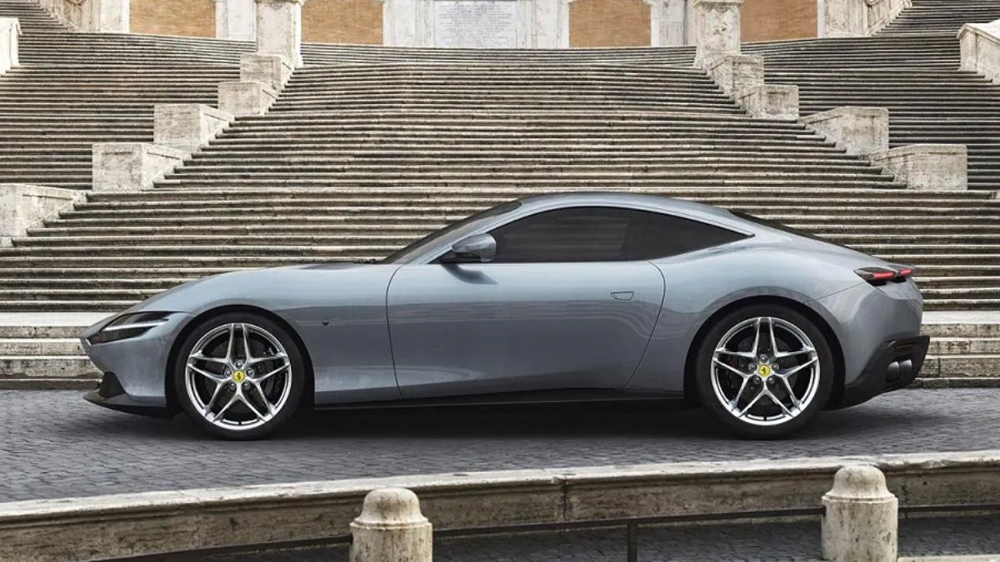
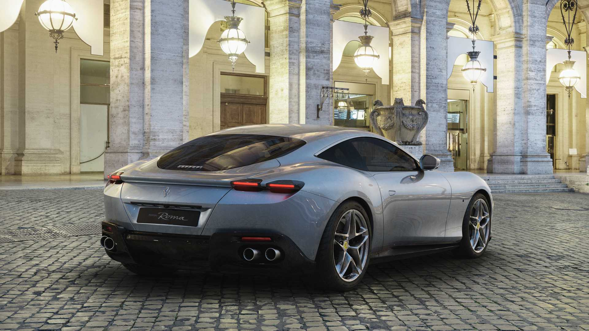
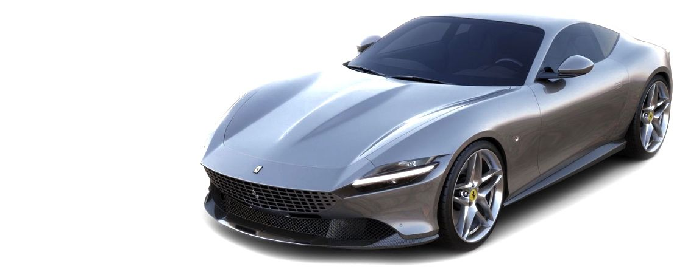

TIMELESS ELEGANCE
The Ferrari Roma, the new mid-front-engined 2+ coupé of the Prancing
Horse, features refined proportions and timeless
design combined with unparalleled performance and handling. With its
distinctive flair and style, the car is a
contemporary representation of the carefree, pleasurable way of life
that characterised Rome in the 1950s and ‘60s.

ELEGANT, PURE
DESIGN
The approach taken by the Ferrari Styling Centre for the
Ferrari Roma's exterior centres around clean design and
absolute symbiosis between its various elements with
hermonious proportions and pure, elegant volumes. To
underscore that formal minimalism, all superflous detailing
has
been removed.

INGINEOUS TECHNICAL
INNOVATION
The Ferrari Roma represents the pinnacle of
performance in this category, thanks to its
turbo-charged V8 from the family of engines
that has won the overall International Engine of
the Year award four years running. In this
version, the engine reaches 620 cv at 7500 rpm
and is coupled with the new 8-speed
DCT gearbox that was introduced on the SF90 Stradale.